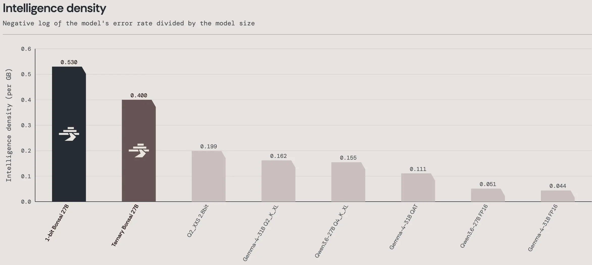

THE FRONT PAGE
EDITOR'S NOTE: A busy day in the latent space. #Judgment and craft
MODEL RELEASE HISTORY
No confirmed model releases were detected for this edition date.

By aggressively optimizing memory layout, the Bonsai 27B model runs locally on modern smartphones. It offers a rare victory for local execution, though the extreme quantization required introduces a stark tradeoff in reasoning precision over multi-step tasks.